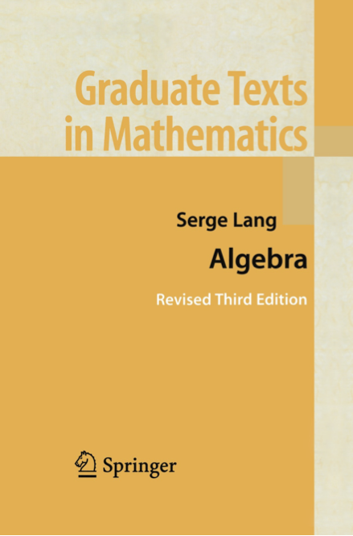

Course Description
-
This is a first semester graduate course in abstract algebra, and
is intended to be an introduction to the fundamental objects of groups, rings, modules,
fields, and vector spaces.
I intend to cover all of Chapters I and II, and most of IV from Lang's
classical algebra text (at right).
We should cover the following topics, time permitting.
- monoids
- basic group theory
- cyclic groups
- finitely generated abelian groups
- Sylow theorems
- categories and functors
- free groups and inverse limits
- basic ring theory
- commutative rings
- polynomial and group rings
- localization
- principal ideal domains and unique factorization domains
- polynomials in one variable
- factorization of polynomials
- Hilbert's theorem
- partial fractions
- symmetric polynomials
Prerequisites: Undergraduate abstract algebra (Math
415/6) or its equivalents, as determined by the instructor.
|
|

|
 Mondays:
Mondays: